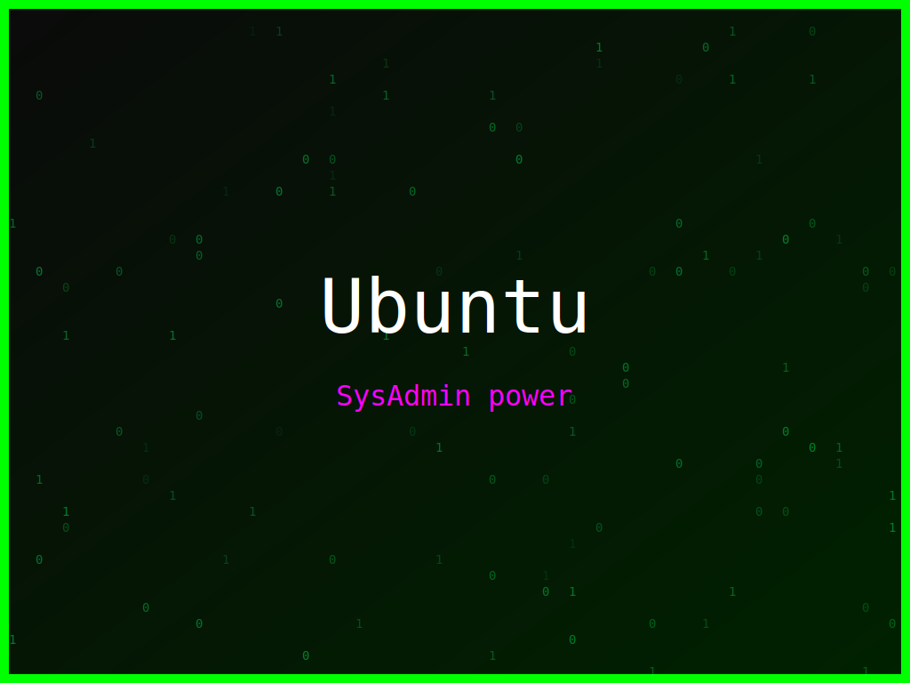

<section class="post-content">

    <div class="details-container">
       
        
        <ul class="details-list">
            <li><strong>Autor:</strong> piolinux</li>
            <li><strong>Descrição:</strong> Um design focado na segurança digital e na liberdade, com o tema Ubuntu.</li>
            <li><strong>Distro:</strong> Ubuntu</li>
            <li><strong>Frases:</strong> Segurança primeiro, SysAdmin power, Digital freedom</li>
            <li><strong>Tags:</strong> matrix, colorido</li>
        </ul>
        <a href="../galeria.html">Voltar para a galeria</a>||
        <a href="../wallpaper12.svg" download="wallpaper-ubuntu-liberdade-dgital-e-segurança.svg">Baixar Wallpaper</a>
    </div>

</section>
